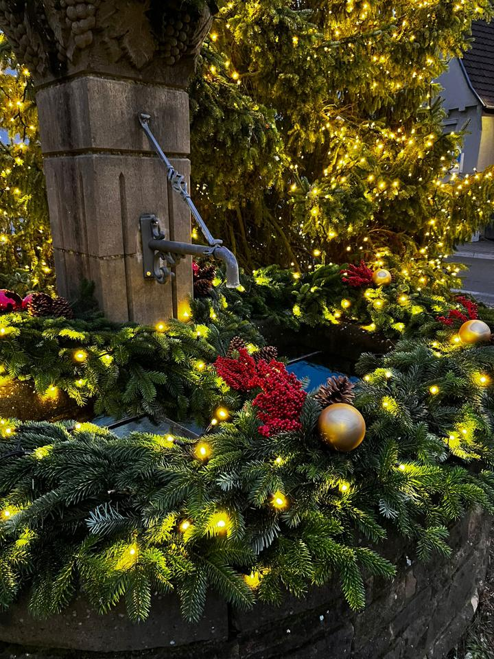

Vorschau · Termin wird bestätigt
Lichterfest am 1. Advent
- Sonntag, 29. November 2026, ab 17 Uhr
- Kirchplatz Kleingartach, am Weihnachtsbaum und am Brunnen
Noch bis zum Lichterfest
–Tage
–Std.
–Min.
–Sek.
Mit dem Lichterfest beginnt in Kleingartach die Adventszeit. 2025 gab es Glühwein, Punsch und Grillwurst unter dem Zelt, Würste von der Metzgerei Reinwald, Brötchen von der Bäckerei Keppler, Getränke von Getränke Hees und Glühwein von den Heuchelberger Weingärtnern.